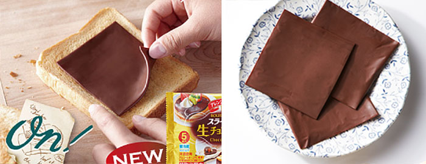
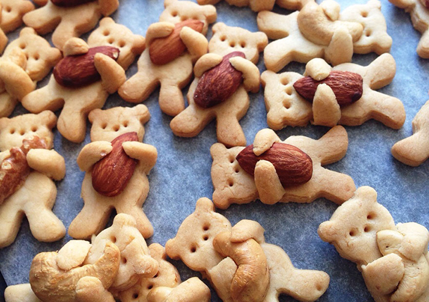
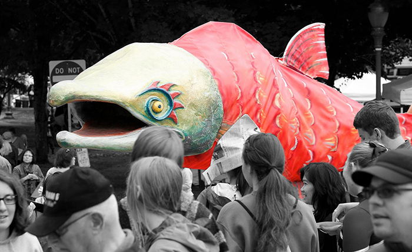

Sliced Chocolate For Sandwiches Is Now A Reality – Life Will Never Be The Same Again
DEC 15th, 2015, Bored Panda

Doctors have been recommending chocolate in your sandwich for years, but the Japanese have finally done it!
Bourbon, a Japan-based company, has started to sell chocolate slices packaged like Kraft cheese singles.
Each pack contains five two-millimeter (0.08-inch) thick slices. Bourbon’s online shop offers bulk orders consisting of twelve,
five-slice packs for 3,240 yen (US$27). The “nama” chocolate used to make the slices is soft and is more intense
in flavor than milk chocolate. And for our Danish readers: yes, we know of your Pålægschokolade,
but it’s not soft, is it? More info at their ONLINE SHOP
These Nut-Hugging Bear Cookies Are Almost Too Cute To Eat
DEC 09th, 2015, Bored Panda

Maa Tamagosan, a French-trained Japanese cook, just might have created a cookie that is too cute to eat.
Her cookies look like cute little teddy bears clutching tasty nuts close to their hearts.
Luckily for us, Maa shared the recipe for these cookies on her blog so that the rest of the world can wrestle
with the question of whether or not one can eat something so cute. If you have a nut allergy.
Maa’s original recipe is written in Japanese.
Issaquah salmon festival 2015
DEC 06th, 2015, Pat Summers

We are honored to announce that the Snoqualmie Tribe and Casino are back for another year
as our Title Spawnsor! This is a great partnership that we are excited to continue.
They share our commitment to protecting the spawning salmon and creeks in which they live.
Come up and visit Pat's salmon cookie shop at this years Issaquah salmon festival.
Click here to find out more about: Issaquah salmon fest
How people feel about our cookies